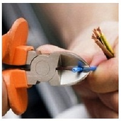
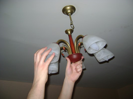

Качественный электромонтаж в Санкт-Петербурге и ленобласти, стаж 12 лет. Частный электрик, недорого и качественно.
Тел. 8 904 642 08 57 Николай.

Работы по электрике в СПБ.
Здравствуйте, работу выполняет частный электрик со специальным образованием и огромным опытом, накопленным за время работы по специальности.
Давайте познакомимся – меня зовут Николай. Расскажу немного о себе. Я занимаюсь работой по электромонтажу и слаботочными работами уже более 20 лет. Выезжаю на заявку всегда с полным комплектом необходимых электроинструментов и оборудования. Если клиент заказывает монтаж внутренней проводки, то работу выполняю профессиональным штроборезом. Клиент всегда доволен – инструмент оборудован пылесосом и внутри помещений, где я работаю, не оседает пыль на поверхностях. Воздух остается чистым, не как раньше – в метре от себя ни чего не было видно, пылища на мебели во всех комнатах толстым слоем укладывалась. Теперь, чистота и красота, штробы получаются идеально ровные, замазывать их легко, хоть сразу обои наклеивай. Что-то я в электро – лирику ударился. В моем арсенале имеется и перфоратор, с оснащением пылесосом.
Наличие собственного автомобиля позволяет мне доставлять к заказчику не только рабочие принадлежности, но и необходимые стройматериалы в любой населенный пункт области и по любому адресу внутри города.
Расскажу, как я стал частным электриком. Успешно трудился в фирме, неплохо зарабатывал. Однажды устанавливал сигнализацию в частном доме у одного предприимчивого хозяина. Он и заронил мне в душу идею словами. С твоими-то руками, да в конторе работать! Я бы не стал!
Понятно, что я иногда выполнял работы по электрике в частном порядке (минуя фирму, подрабатывал на стороне). Подумал, что терять мне не чего, клиенты уже свои есть, если буду работать на себя, у каждого буду спрашивать, может друзьям или знакомым нужна помощь. Решился – уволился и с тех пор имею собственную клиентскую базу. Без дела сидеть не приходится. Но, ведь работа, как наркотик – сколько не дай, все мало. Всегда стараюсь выполнять все работы по электрике только из качественных материалов, добросовестно и не затягиваю сроки. Если нужна консультация заказчику – подробно объясню, покажу, подскажу!
Спросите, почему частник-одиночка лучше любой конторы? Лучше на конкретном примере показать все преимущества.
Допустим, я заменяю электропроводку в квартире. Что получает заказчик:
- Заключаю договор на замену
- Заказчик сам закупает нужные материалы, или доверяет мне
- Аккуратно, без суеты снимаю старые провода и устанавливаю новые
- Подключаю к счетчику и сдаю работу
- Получаю расчет за все работы по электрике
- Остаемся с заказчиком « на телефоне». Понадоблюсь – вызовет. Понравилось – знакомым посоветует, передаст меня, как говорится «в добрые руки».
Казалось бы, что и любая компания выполняет так же свою работу. Нет, есть одно БОЛЬШОЕ отличие – цена заказа! Я работаю на себя, и мне нет нужды делиться с кем-либо оплатой. Любая фирма, это целый штат сотрудников директора, секретари, менеджеры, водители, технички и так далее. И каждый должен получить с заявки свой кусок! Явно, что моего гонорара не хватит на такую уйму народа. Вывод – работа выполняется одинаковая, а вот платить конторе придется гораздо больше, чем частному электрику!
Как со мной связаться.
В любое время принимаю заявки по мобильному телефону. Можно зайти на мой сайт и отправить электронное письмо. Укажите, какие работы по электрике необходимо провести, общий объем. Я составлю подробный расчетный документ и отправлю на ваш электронный адрес. Согласуем время начала электромонтажных работ. И все - я к вашим услугам!
Что я предлагаю:
- монтаж систем видеонаблюдения и видеокамер
- замена электропроводки
- перенос/установка/замена электророзеток, выключателей
- ремонт/установка домофонов
- ремонт/монтаж интернет проводки
- установка акустического оборудования
- монтаж скрытого видеонаблюдения и видеокамер в торговых помещениях
- наладка и настройка спутниковой связи
- установка светильников на улице
- подключение электросчетчика
- монтаж/замена люстр, светодиодного освещения
- монтаж трансформаторов
- комплексные работы по электрике
- праздничная подсветка помещений\зданий
- подключение электроплит, варочных панелей
- изменения схем электропроводки, по желанию заказчика
- срочный выезд на заявку
С полным перечнем услуг можно ознакомиться на сайте. Здесь же вы найдете контактную информацию, расценки на проведение различных электромонтажных работ.
Рачительный хозяин всегда славился своей практичностью и умением экономить. Я выполняю работы по электрике по доступной цене, которой вы не найдете на в одной электромонтажной конторе. Кроме того, в моих интересах сделать работу на высшем уровне, с учетом всех требований по технике безопасности и эксплуатации. Качественно выполненный заказ дает возможность мне обрести нового постоянного клиента и новых заказчиков из числа его друзей родных и знакомых.
Довольно часто приходится выезжать на заявки, связанные с монтажом электропроводки под ключ, то есть полная установка, разветвление и подключение к электросчетчику. Замечу, что такого рода услуга в несколько раз дешевле стоит у меня, чем в любой компании. Составленная смета и порядок проведения работ позволяет проводить электромонтаж без лишней суеты, качественно. Я не ограничен временными рамками рабочего дня и могу выполнять заявку все светлое время суток.
Если заказчик не успел закупить стройматериалы, приобрету все сам, представлю полный документальный отчет по покупкам. Для более правильной оценки предстоящих работ можно договориться о встрече на объекте, где совместными усилиями с заказчиком, проведем расчет предстоящих покупок и электромонтажных работ любой сложности.
Выезжаю на заявки любой сложности. Если внезапно замигал свет или появился запах электропроводки не нужно ждать, когда само нормализуется. Скорее всего, откажут электроприборы или возникнет пожар звоните мне немедленно и вызывайте в любое время. Исправлю быстро, надежно и доступно (по стоимости). Оплата за такую услугу мизерная, по сравнению с потерей всего имущества или порчей дорогой бытовой техники.
Еще раз повторюсь: я всегда на связи: «Здравствуйте, работу выполняет частный электрик.
 Поменять проводку в квартире.
Поменять проводку в квартире. Сколько будут стоить материалы.
Электрика в загородном доме стоимость работ.

Замена электропроводки в панельном доме.
Расценки на электропроводку квартир.
Замена проводки в хрущевке.
Электромонтаж в частном доме.
Электрика в загородном доме.
Сколько стоит замена электропроводки в двухкомнатной квартире?.
Электрик в новостройку однокомнатная квартира недорого.

Сколько стоит поменять электропроводку в 3-х комнатной квартире.